Data Structures and Algorithms
with Object-Oriented Design Patterns in C++
Data Structures and Algorithms
with Object-Oriented Design Patterns in C++
Consider the problem of computing the product of two matrices.
I.e., given two  matrices, A and B,
compute the
matrices, A and B,
compute the  matrix 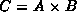,
the elements of which are given by
matrix 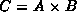,
the elements of which are given by
Section  shows that the direct implementation
of Equation results in an
shows that the direct implementation
of Equation results in an  running time.
In this section we show that the use of a divide-and-conquer
strategy results in a slightly better asymptotic running time.
running time.
In this section we show that the use of a divide-and-conquer
strategy results in a slightly better asymptotic running time.
To implement a divide-and-conquer algorithm
we must break the given problem into several subproblems
that are similar to the original one.
In this instance we view each of the  matrices
as a 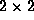 matrix,
the elements of which are 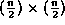 submatrices.
Thus, the original matrix multiplication,
can be written as
matrices
as a 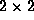 matrix,
the elements of which are 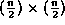 submatrices.
Thus, the original matrix multiplication,
can be written as
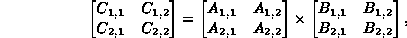
where each  , 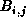 and 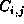
is an matrix.
, 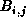 and 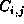
is an matrix.
From Equation we get that
the result submatrices can be computed as follows:
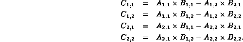
Here the symbols + and  are taken to mean
addition and multiplication (respectively) of
matrices.
are taken to mean
addition and multiplication (respectively) of
matrices.
In order to compute the original  matrix multiplication
we must compute eight matrix products
(divide)
followed by four matrix sums
(conquer).
Since matrix addition is an
matrix multiplication
we must compute eight matrix products
(divide)
followed by four matrix sums
(conquer).
Since matrix addition is an  operation,
the total running time for the multiplication operation
is given by the recurrence:
operation,
the total running time for the multiplication operation
is given by the recurrence:
Note that Equation is an instance of the general
recurrence given in Equation .
In this case, a=8, b=2, and k=2.
We can obtain the solution directly from Equation .
Since  , the total running time is
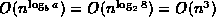.
But this no better than the original, direct algorithm!
, the total running time is
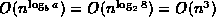.
But this no better than the original, direct algorithm!
Fortunately, it turns out that one of the eight matrix multiplications is redundant. Consider the following series of seven matrices:
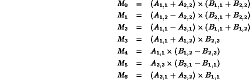
Each equation above has only one multiplication. Ten additions and seven multiplications are required to compute 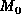 through 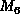. Given through , we can compute the elements of the product matrix C as follows:
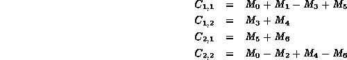
Altogether this approach requires seven matrix multiplications and 18 additions. Therefore, the worst-case running time is given by the following recurrence:
As above, Equation is an instance of the general
recurrence given in Equation .
and we obtain the solution directly from Equation .
In this case, a=7, b=2 and k=2.
Therefore,  and the total running time is
and the total running time is
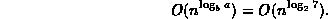
Note  .
Consequently,
the running time of the divide-and-conquer matrix multiplication strategy
is 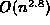 which is better (asymptotically)
than the straightforward
.
Consequently,
the running time of the divide-and-conquer matrix multiplication strategy
is 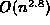 which is better (asymptotically)
than the straightforward  approach.
approach.
 Copyright © 1997 by Bruno R. Preiss, P.Eng. All rights reserved.
Copyright © 1997 by Bruno R. Preiss, P.Eng. All rights reserved.